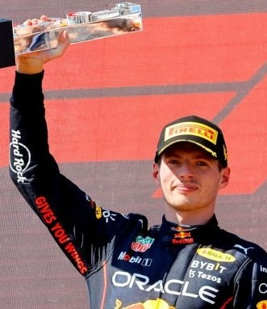
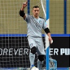
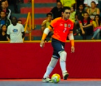
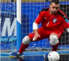
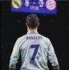

Друзья 1331
| Айзат | Магжан | Жанель |
| Ельнур | Магжан | Жанель |
Мои фотографии 95




Max Verstappen
02 мар в 16:55
02 мар в 16:55
В июле 2014 года появилось сообщение о том, что к Ферстаппену стали проявлять интерес команды Формулы-1 — Ferrari, McLaren и Red Bull[9], а уже в августе было официально объявлено о его включении в состав молодёжной программы Red Bull по приглашению Хельмута Марко[10], после чего он стал тест-пилотом в Toro Rosso. Через несколько лет, в июле 2018 года, Ники Лауда рассказал, что команда Mercedes пыталась подписать контракт с Ферстаппеном, но в Red Bull опередили их[11].
Ферстаппен принял участие в тренировке Гран-при Японии 2014 года, тем самым став самым молодым пилотом, принявшим участие в этапе Формулы-1[12]. В августе 2014 года команда Toro Rosso заявила о подписании контракта с Ферстаппеном, по которому он стал её боевым пилотом в следующем сезоне[13]. Ферстаппен дебютировал в 17 лет, в результате чего установил новый рекорд — стал самым молодым гонщиком в истории Формулы-1[14]. В четырёх гонках сезона он сошёл, а за 15 остальных девять раз финишировал в очковой зоне, всего набрал 49 очков и занял 12-е место в личном зачёте[3].